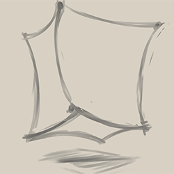

This is work done for an independent project. The idea was to create a magical school story that focused on actually learning stuff.
Software used: Adobe Photoshop CS6, Adobe After Effects CS6, Microsoft Word, Paint Tool Sai
Hardware used: Wacom Cintiq 13HD, Home Computer
Stop Motion Animation
Environmental PSA
Completed on February 10, 2015
The Northeastern University Animation program would often start students off in a course that allowed them to explore the various methodologies behind animation's history. One of the biggest forms of this animation is stop-motion animation, resulting in .
This was an After Effects experiment I engaged in as I began to explore Illustrator as a tool of minimizing the amount of lines required in my usual animations. If I had to name a weakness in my drawing technique, it would be "consistency." Sadly, "Consistency" is the primary method of conveying mass and motion in Animation- without it, the viewer won't have a clear definition of what character is which. To mitigate this effect, I tried using Illustrator paths based on a drawing I had in After Effects to simulate a proper animation. This created a smooth result (a), but upon review, I revised the animation to add more inbetweens to give the scowl a bit more... personality (b).
I was once advised to avoid Photoshop as a straight animation program. In hindsight, perhaps this was good advise. I opted to ignore it regardless. I wanted to try my hand an at a more traditional form of animation, resulting the animation above. I sourced the motion from a clip of a ping pong professional just showing off the spin he could gain from an excellent slice.
Software used: Paint Tool Sai 2, Adobe Photoshop CC

BoxyBox the Animation
I was once told to draw a box. I found the box to be rather boring... so I started animating it with a bit more spirit.
Software used: Paint Tool Sai 2, Adobe Photoshop CC
 Just an animated blink.
Just an animated blink.